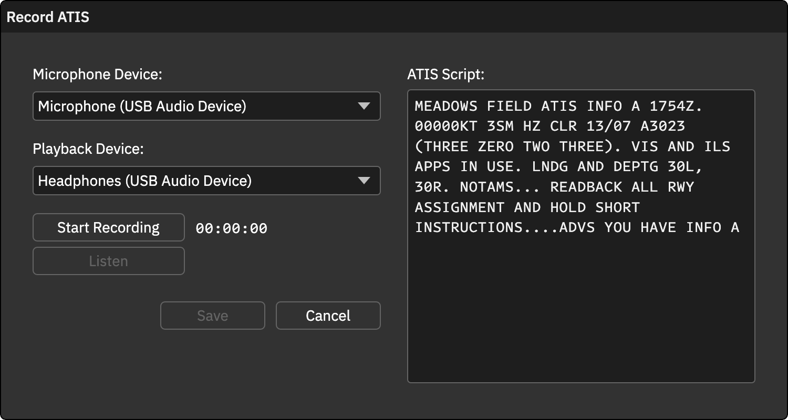

人工录制 ATIS
人工录音适合按本单位规范自己读出情报。先在常规设置中选择 Voice Recorded。
录制流程
- 连接席位：点击 CONNECT，确认机场及字母，等待 METAR 到达。
- 打开录音窗口：点击 RECORD ATIS。按钮仅在席位已连接且已有 METAR 时可用。
- 选择设备：选定麦克风和播放设备，用于录制和试听。
- 开始与停止：点击 Start Recording，朗读脚本，完成后点击 Stop Recording。
- 试听：点击 Listen；需要修改时重新录制。
- 保存：点击 Save 提交录音，或 Cancel 放弃。本地录音至少 5 秒才可保存。
脚本会将机场代码替换为机场名称，方便朗读，例如以机场全称替换 KLAX。
更新录音
收到新 METAR、改变机场运行情况或通告后，重新核对脚本并录制。迷你窗口的红点用于提示待录音状态。
运行条件
录制和试听依赖 NativeAudio.dll 及可用音频设备。Windows 麦克风隐私设置需要允许桌面应用访问。macOS 版本如果由 CAN 发布，还需要系统麦克风权限。
保存会将音频交给 CAN 语音发送逻辑；当前 worker 的持续循环和 UDP 能力仍待完善，实际频率中能否持续听到，需以发布版本验证为准。
操作截图参考
以下为上游原版截图，保留英文标签。用于定位操作；品牌、登录字段与网络行为以本页 CAN 说明为准。
